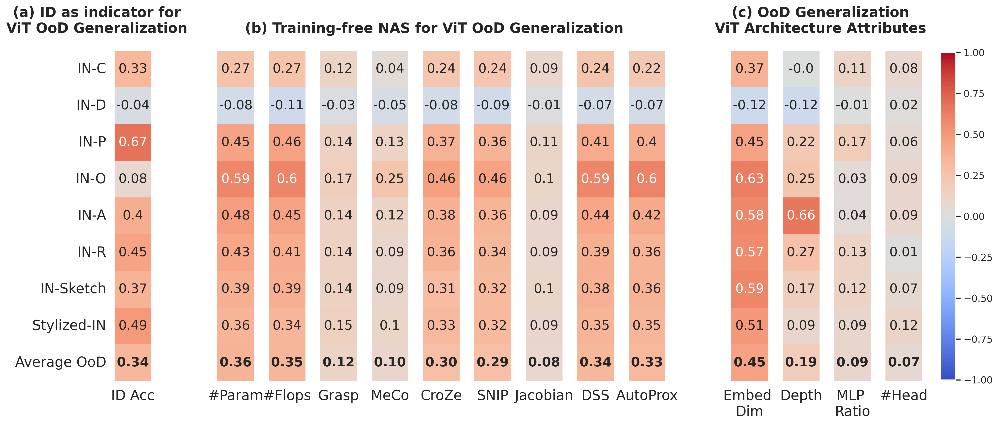

Figure 1. We propose OoD-ViT-NAS, the first comprehensive benchmark for NAS on OoD generalization of ViT architectures. The heatmap shows Kendall τ ranking correlations between OoD accuracy and (a) ID accuracy, (b) 9 Training-free NAS proxies, and (c) ViT architectural attributes. Key finding: embedding dimension consistently has the highest correlation with OoD accuracy, while existing Training-free NAS methods largely fail at predicting OoD accuracy despite excelling at ID.
Abstract
While Vision Transformers have achieved success across various machine learning tasks, deploying them in real-world scenarios faces a critical challenge: generalizing under Out-of-Distribution (OoD) shifts. A crucial research gap remains in understanding how to design ViT architectures — both manually and automatically — to excel in OoD generalization.
To address this gap, we introduce OoD-ViT-NAS, the first systematic benchmark for ViT Neural Architecture Search focused on OoD generalization. This benchmark includes 3,000 ViT architectures of varying computational budgets evaluated on 8 common large-scale OoD datasets. Our analysis uncovers that ViT architecture designs have a considerable impact on OoD accuracy (up to 11.85%); that ID accuracy is often a poor indicator of OoD accuracy; that existing Training-free NAS methods are largely ineffective at predicting OoD accuracy; and that simple proxies like #Param or #Flops surprisingly outperform more complex methods. Finally, we discover that increasing embedding dimensions generally enhances OoD performance — a finding traceable to improved learning of high-frequency components, outperforming SOTA domain-invariant training methods under comparable settings.
Four Insights from OoD-ViT-NAS
Architecture Design Matters for OoD
ViT architectures exhibit a wide OoD accuracy range — up to 11.85% for some shifts — comparable to or exceeding the 1.9% gain from SOTA domain-invariant training (HYPO). Architectural choice is as impactful as training strategy.
ID Accuracy is a Poor OoD Proxy
Kendall τ between ID and OoD accuracy is consistently low across all 8 datasets. Pareto-optimal architectures for ID accuracy generally perform sub-optimally under OoD shifts. Optimizing for ID alone is risky.
Training-free NAS Fails at OoD
All 9 studied Training-free NAS proxies — including ViT-specific DSS and AutoProx — show significantly weakened effectiveness for OoD prediction. Surprisingly, simple #Param and #Flops outperform all complex methods (τ ≈ 0.36 vs 0.33).
Embedding Dimension is the Key Attribute
Among all ViT structural attributes, embedding dimension has by far the highest OoD correlation (τ ≈ 0.45). Depth shows only modest impact (0.19), while MLP ratio and #heads are negligible (<0.10). Increasing embed dim improves learning of high-frequency components.
How OoD-ViT-NAS is Built
Building NAS benchmarks is notoriously expensive. We leverage One-Shot NAS (Autoformer) to efficiently sample and evaluate 3,000 ViT architectures without individual training — inheriting supernet weights for comparable performance in ~3,900 GPU-hours total.
Search Space — Autoformer Tiny / Small / Base
Five architectural attributes per block: embedding dimension, Q-K-V dimension, number of attention heads, MLP ratio, and network depth. 1,000 architectures randomly sampled per supernet size, spanning a wide range of computational budgets.
Efficient Evaluation via One-Shot NAS
Subnets inherit weights from pre-trained supernets. Their performance has been shown to be comparable to, or even superior to, architectures trained from scratch. This enables efficient large-scale benchmarking (224×224 input, standard ImageNet normalization).
8 OoD Datasets Across 3 Shift Types
Algorithmic shifts: ImageNet-C (15 corruptions × 5 severities), ImageNet-P. Natural shifts: ImageNet-A, ImageNet-O, ImageNet-R, ImageNet-Sketch, Stylized ImageNet. Generative shifts: ImageNet-D (Stable Diffusion backgrounds, textures, materials). Metrics: ID Acc, OoD Acc, AUPR.
Training-free NAS vs. OoD Accuracy Prediction
Kendall τ ranking correlation between proxy values and ID/OoD accuracy, averaged across 8 OoD datasets and 3 search spaces. Simple proxies beat all sophisticated methods on OoD prediction — posing an open challenge to the NAS community.
| Method | Proposed For | Architecture | Corr. w/ ID Acc | Corr. w/ OoD Acc |
|---|---|---|---|---|
| Grasp | ID Acc | CNNs | 0.149 | 0.121 |
| SNIP | ID Acc | CNNs | 0.375 | 0.289 |
| MeCo | ID Acc | CNNs | 0.144 | 0.098 |
| CroZe | Adv. Robustness | CNNs | 0.382 | 0.295 |
| Jacobian | Adv. Robustness | CNNs | 0.105 | 0.084 |
| DSS | ID Acc | ViTs | 0.417 | 0.342 |
| AutoProx-A | ID Acc | ViTs | 0.402 | 0.330 |
| #Param | — | — | 0.461 | 0.360 |
| #Flops | — | — | 0.471 | 0.354 |
All Training-free NAS methods consistently fail on ImageNet-D due to its Stable Diffusion generation process, which creates highly atypical distributions.
Embedding Dimension Drives OoD Robustness
Among all ViT structural attributes, embedding dimension has by far the highest correlation with OoD accuracy (τ ≈ 0.45 avg). Depth shows only a slight impact (τ ≈ 0.19), while MLP ratio and #heads exhibit very low correlation (<0.10).
Our frequency analysis reveals why: increasing embedding dimension helps ViTs learn more High-Frequency Components (HFC). Models learning more HFC achieve better OoD generalization. This insight drives a practical design rule — by only increasing the embedding dimension of ViT-B-32 (768 → 840), our architecture outperforms compound-scaled ViT-L-32 in OoD accuracy with far fewer parameters (98.6M vs 305.6M), achieving IN-R OoD Acc of 48.28% vs 44.33%.
Citation
@article{ho2025vision,
title = {Vision Transformer Neural Architecture Search for Out-of-Distribution Generalization: Benchmark and Insights},
author = {Ho, Sy-Tuyen and Van Vo, Tuan and Ebrahimkhani, Somayeh and Cheung, Ngai-Man},
journal = {arXiv preprint arXiv:2501.03782},
year = {2025}
}